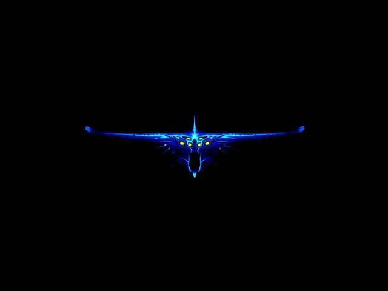
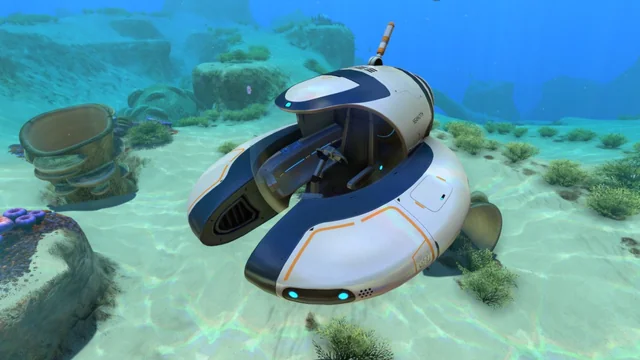
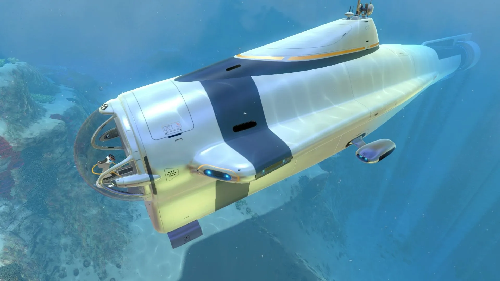
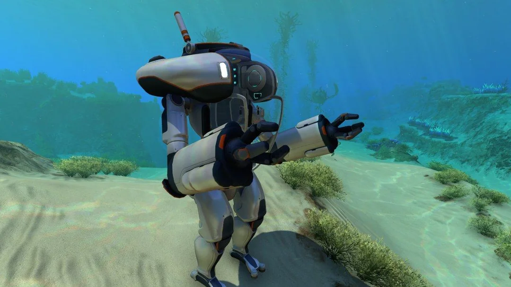
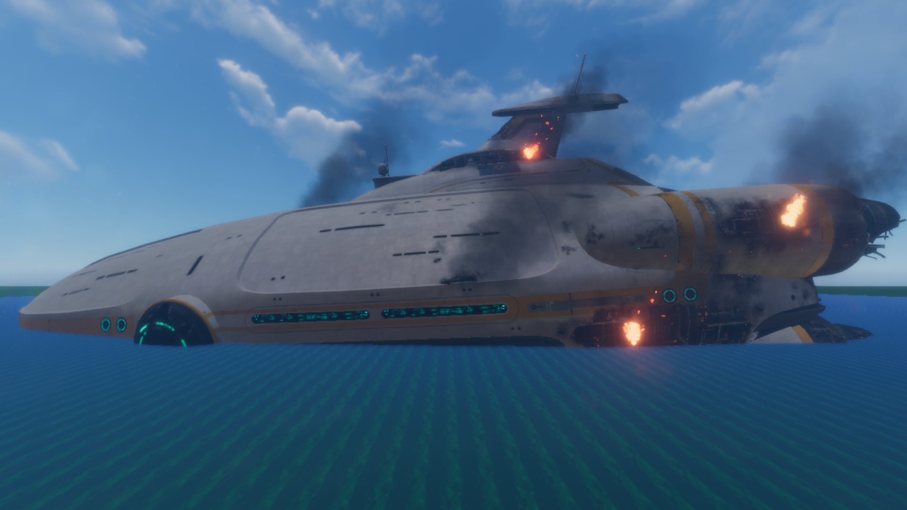
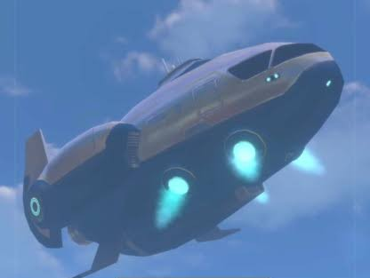
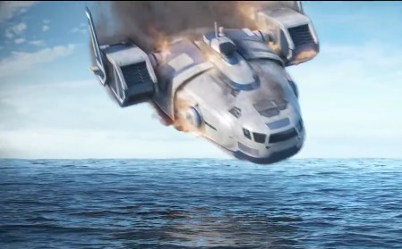

O predador mais temido de 4546B. Extremamente agressivo, usa suas enormes mandíbulas para agarrar e destruir qualquer coisa que encontrar.

Ghost Leviathan
Uma criatura gigantesca que habita principalmente o Void. Seu corpo translúcido e brilhante faz dele um dos leviatãs mais misteriosos e perigosos do planeta.
Sea Treader Leviathan
Um leviatã pacífico que caminha lentamente pelo fundo do oceano. Sua passagem libera recursos valiosos do solo.
Sea Dragon Leviathan
O maior predador vivo de 4546B. Habita as zonas de lava e é capaz de lançar enormes bolas de fogo contra suas presas.
Biomas
Diferentes regiões do oceano, cada uma com perigos, recursos e criaturas únicas.
Safe Shallows
O bioma onde a aventura começa. Águas rasas, recursos abundantes e criaturas geralmente pacíficas fazem deste o local ideal para os primeiros dias de sobrevivência.
Crash Zone
Área que cerca os destroços da Aurora. Rica em fragmentos, mas extremamente perigosa devido aos multiplos Leviatãs patrulhando a região.
Lost River
Uma enorme rede de cavernas subterrâneas coberta por rios de substâncias tóxicas. Esconde recursos raros, fósseis antigos e criaturas das profundezas.
Lava Zone
A região mais profunda e quente do planeta 4546B que pode ser acessada. Lar dos Sea Dragon Leviathans e de formações vulcânicas, é onde ficam importantes segredos da história de Subnautica.
Veículos
Máquinas usadas para exploração e sobrevivência no planeta.

Seamoth
Um pequeno submarino de exploração rápido e ágil. Ideal para explorar as regiões rasas e médias do planeta com segurança.

Cyclops
O maior submarino pilotável de Subnautica. Funciona como uma base móvel, permitindo longas expedições pelas profundezas.

Prawn Suit
Um traje de exploração e mineração resistente. Projetado para suportar grandes profundidades e enfrentar ambientes extremamente hostis.
Neptune Escape Rocket
Foguete construído para escapar do planeta 4546B. Sua conclusão marca o fim da jornada em Subnautica.
História
Os eventos que aconteceram em 4546B, incluindo naves, civilizações antigas e tentativas de resgate.

Aurora
A gigantesca nave da Alterra que caiu no planeta 4546B após ser atingida pelo sistema de quarentena alienígena. Seus destroços escondem recursos valiosos e revelam parte da história do jogo.

Sunbeam
Uma nave de resgate que responde ao sinal de socorro da Aurora. Ao tentar pousar no planeta, é destruída pelo sistema de quarentena alienígena.
Precursors (Architects)
Uma antiga civilização alienígena extremamente avançada. Suas instalações e tecnologias espalhadas por 4546B escondem os mistérios da bactéria Kharaa e do sistema de quarentena do planeta.

Degasi
Uma nave que caiu em 4546B anos antes da Aurora. Os sobreviventes construíram bases pelo planeta, deixando registros que ajudam a revelar os acontecimentos anteriores à chegada do protagonista.
Mapa
Visão geral do planeta 4546B, mostrando os principais biomas e pontos de interesse.